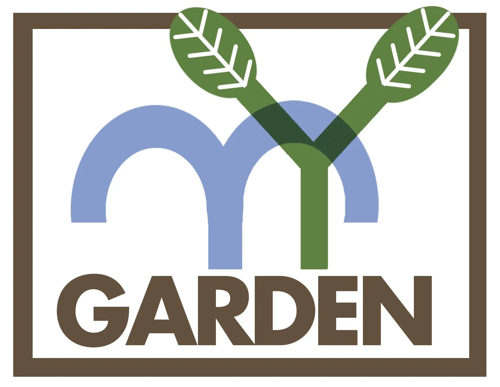

Against the Grain Community

Armory Community Garden is a community-driven green space in New Haven that brings neighbors together through shared gardening and urban growing. The garden cultivates not only fruits and vegetables but also a sense of belonging — providing residents with access to fresh produce and a place to reconnect with the land and with each other. It stands as a living example of how community-rooted agriculture can strengthen and nourish an entire neighborhood.
En españolArmory Community Garden es un espacio verde comunitario en New Haven que une a los vecinos a través de la jardinería compartida y el cultivo urbano. El jardín cultiva no solo frutas y verduras, sino también un sentido de pertenencia, brindando a los residentes acceso a productos frescos y un lugar para reconectarse con la tierra y entre sí. Es un ejemplo vivo de cómo la agricultura arraigada en la comunidad puede fortalecer y nutrir a todo un vecindario.
Visit Page